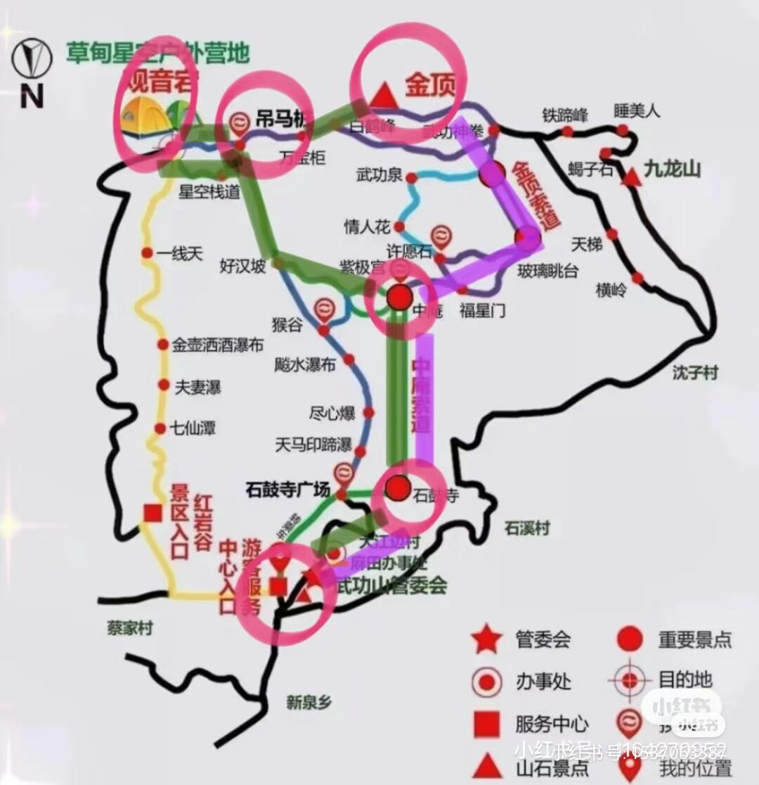

1.路线
方案一
路线：上山：游客中心-石鼓寺-中庵索道-紫极宫-右边福星谷方向徒步-二级索道-徒步金顶-欣赏日落、高山草甸-住金顶附近帐篷-欣赏日出
下山：金顶-吊马桩-好汉坡-紫极宫-石谷寺-游客服务中心
分析：大众路线，适合旅游小白。
不好的地方：金顶会非常多人，比较挤，需要占位置取景，晚上行人太多，基本睡不着，基本都是在唠嗑吃零食过夜，但是我有几对超级耳塞，不知道挡的住不
好的地方：可以看到最好的日落日出
过程：看体力情况是否坐下山缆车
时间：上山（2缆车）2个小时 （1缆车）3-4小时（徒步）6个小时 下山（缆车-需要排长队）4个小时 （徒步）3-4小时
价格：索道65+35
方案二
路线：上山：游客中心-石鼓寺-中庵索道-紫极宫-情人花廊方向徒步上山-金顶-日落-吊马桩-玻璃栈道-观音宕-观音宕帐篷过夜
下山：观音宕-吊马桩-好汉坡-徒步下山-石鼓寺
分析：自由路线，需要一定体力。
不好的地方：想去金顶看最佳日出需要提早起来从观音宕到金顶需要爬一个小时，这个时候比较晚到，需要挤一挤，不过看日出还有一些小众地点，暂且知道的地点：1.金顶西边云中雾客栈方向下去未开发的景点路，有另一个山峰，没有金顶高，但视野同样开阔，关键在于人少不挤
2.观音宕附近也有不错的地方，但是观日出的景点较少
好的地方：晚上可以好好休息睡一觉
过程：看情况
时间：
价格：索道65

方案三
路线；： 上山：游客中心-石鼓寺-中庵索道-紫极宫-徒步金顶-日落-观音宕过夜-第二天早徒步一小时回金顶看日出
下山：-金顶-情人画廊-紫极宫-索道-石鼓寺
分析：晚上能睡好一点，但是观音宕到金顶有4.5公里，会很累，
过程：
时间：
方案四（终极方案）
路线：上山：游客中心-石鼓寺-中庵索道-紫极宫-情人花廊方向-徒步金顶-欣赏日落-住金顶附近帐篷-欣赏日出
下山：金顶-观音宕-高山草甸-吊马桩-好汉坡-徒步下山-石鼓寺
分析：大众路线，徒步要多一点
不好的地方：只有晚上休息的问题，打算用我的超级耳塞去对抗，对抗不了就加入，哈哈哈
好的地方：路程规划没有多走的路，所有风景都能看到最好的路线
过程：看情况
时间：
价格：一次索道65
方案五
路线：东江村上去-徒步观音宕-在观音欣赏日落-住宿观音宕
2.物品准备
书包必备：挡风外套一件、一次性雨衣、充电器、充电宝、身份证、小水杯
食物：泡面、火腿肠、糖等等，去零食店购入
洗漱：纸巾、湿巾、一次性洗漱用品、防晒霜
住：耳塞
注：1.最最重要的还是天气，一定要天晴
2.至于臭虫，看当时最近的那几天是选择住金顶还是观音宕